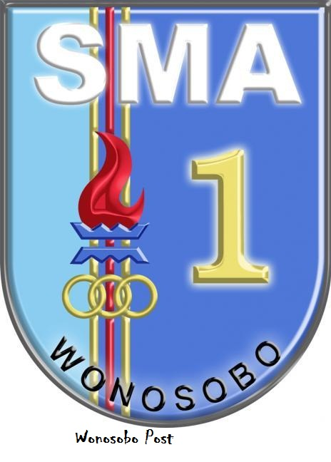

Hi, I'm Alan
Experience & Education
Experience
Volunteering at Art Exhibition
I organized the installation of paintings and photos at Astraframe Art Exhibition CLASSIC SMANSA Wonosobo 2023. I also responsible to oversee the venue and answering several question from visitors.


Education
SMAN 1 Wonosobo
I went to high school at SMAN 1 Wonosobo with satisfactory grades. Majored in natural sciences for 3 years.

State University of Semarang
I am currently pursuing higher education at the State University of Semarang majoring in Informatics Engineering.
Portfolio
Photography
When I was in high school, I was quite active in learning and practicing photography skills, especially mobile photography.I have some old shots that can be seen on my instagram @adtyalan. Currently, i participated at Screenshot UNNES an underbow organizations in my University specializing in journalistics which require photography skills too.
Fun fact: All of the photos below is taken with a phone.


Design
I discover this passion of design in my late high school. Unfortunately, right now im too busy with uni to creating any other artworks. Anyway here's some old design i've made throughout 2023.
Instagram Post and Stories


Design Competition
Currently, this is the one and only i participated in an design competition. This competition is held by @hensaadriano

Logo Design
This is supposed to be my for fun logo to be used on my fiverr account as a branding for my services. Lanya is acronym for Alan Aditya.


Frontend Developer
I developed this skills when i go to college. Linear to my Informatics Engineering major so i've decided to dive into this Computer Science related world and what catch my eyes the most is Frontend Developing.
There is still many bug and some of the features didn't work like it should. This is my first time creating HTML CSS Web Project. Thankyou for visiting!
Currently, my portfolio for FE Developer is this webpage you're on right now :D.